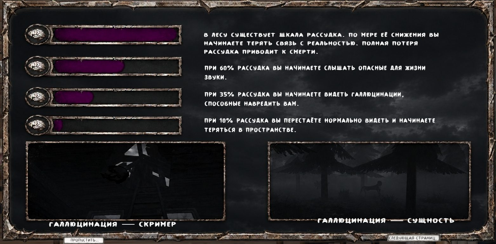
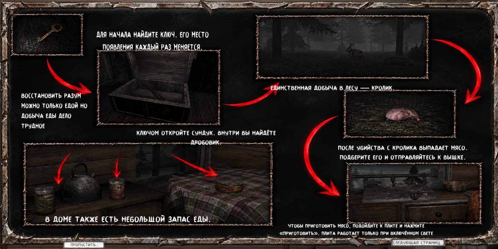
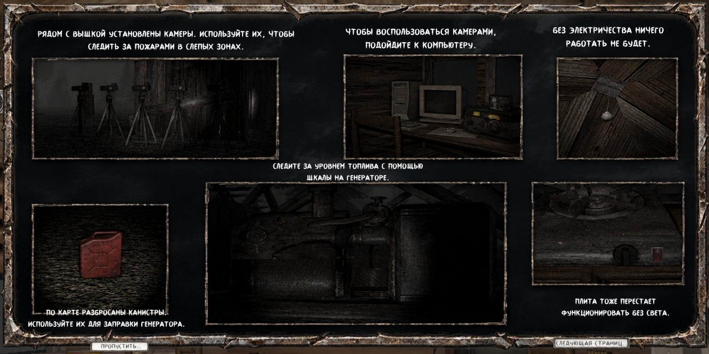
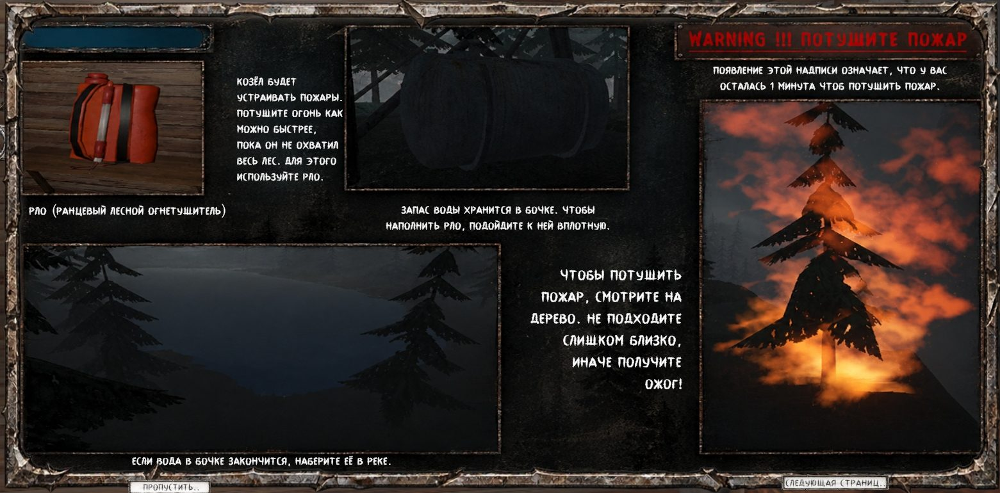

Как выжить
Четыре вещи, за которыми надо следить
Всё это игра объясняет в самом начале. Здесь то же самое, чтобы можно было перечитать.
Рассудок
У тебя есть шкала рассудка. Чем она ниже, тем хуже ты отличаешь реальность от того, что мерещится. Когда она пустеет полностью, ты умираешь.
При 60% начинаешь слышать опасные звуки. При 35% видишь галлюцинации, которые могут навредить. При 10% перестаёшь нормально видеть и теряешься в пространстве. Восстановить рассудок можно только едой.

Еда
Сначала найди ключ. Каждый раз он лежит в новом месте. Ключом откроешь сундук, а в нём дробовик. Единственная добыча в лесу это кролик. После убийства из него выпадает мясо, его нужно отнести к вышке и приготовить на плите.
Плита работает только при включённом свете. В доме есть небольшой запас консервов.

Свет
Без электричества ничего не работает: ни плита, ни компьютер с камерами. Следи за топливом по шкале на генераторе. По карте разбросаны канистры, ими заправляют генератор.
Камеры стоят рядом с вышкой, через компьютер ими смотрят слепые зоны леса и ищут пожары.

Огонь
Пожары устраивает Козёл. Как только на экране появляется красное предупреждение, у тебя одна минута. Тушить нужно быстро, пока огонь не охватил весь лес.
Для этого есть РЛО, ранцевый лесной огнетушитель. Воду для него бери из бочки, подойдя вплотную. Когда бочка опустеет, наберёшь воду в реке. Смотри на горящее дерево и не подходи слишком близко: обожжёшься.

И главное
Козёл боится света. Это единственное, что может тебя от него защитить. Когда идёшь по лесу, смотри по сторонам. Если заметишь его, он сразу скроется.